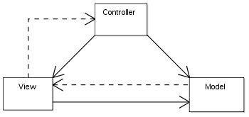

StringTemplate – a step forward to a better web MVC
MVC, Model View Controller is a well known design patten from the field of UI frameworks. It advocates the separation of a Model, an application specific data and business logic, Controller, which takes user input, consults the model and determines the correct view to present a user based on its result and a View, the actual UI component the user interacts with.
In the context of web applications it’s common to consider a Database along with the application business logic as the Model, a web framework, such as Struts, as the Controller and the rendering engine, such as JSP as the View. MVC are widely used in both web development as well as in desktop application development.
StringTemplate is a rendering engine, a View, I’ve recently became familiar with and immediately fell in love with. StringTemplate is a step forward true MVC implementation, but before presenting the solution, let’s see what the problem is.
The MVC design pattern states that in a UI framework there should be 3 components – the Model, the View and the Controller. It also states that the Controller should have direct access to the Model and the View, the View have direct access to the Model when presenting the data as seen in the diagram below.

There are many MVC implementations in many languages. In Java only, there are more than 17 mentioned on the Wiki page. Many of the frameworks use JSP as their rendering engine and add their specific features to it, so for example struts2 implements a very nice controller and as a rendering engine uses JSP with either struts2 tags or another tag library. The problem lies within JSP.
JSP, similar to PHP, ASP and many other simple and fast-start rendering engines, compromise the MVC model; they allows too much in their View component.
JSP allows code to be executed within the context of the page (using the <% %> notation), which is very nice when you want to hack something fast but is extremely dangerous from code maintenance perspective and is a clear violation of the MVC agreement. If code can be executed within a page, that code can easily alter the model or take actions a controller should have taken. A View should be able to READ the model, but not ALTER it. Even the most disciplined programmers who adhere to clean JSP code by not allowing actual Java code inside their pages (using the <% %>) actually suffer from the same problem without even knowing it… The alternative to the <% and the <%= constructs are tags, such as JSTL tags, struts2 tags etc. These tags commonly access the model by invoking its getters, but the real problem with them is that the order in which they execute is very important – read it again – the order in which they are displayed on the page is crucial to the correctness of the values returned by their backing model. More about this here. So with JSP, when using tags, the View implementor has to understand how a Model works in order to succeed. That’s both inconsistent with the pure MVC model and inconvenient to the UI designer. Lastly are side effect, which cannot be ignored. Views can create side effects by calling methods (even getters can have side effects!) , which I think there’s no need to mention, is very bad.
StringTemplate comes to the rescue. As a matter of fact, when I programmed django MVC in python, as well as Cheetah in python, I have to say that both MVCs were much stricter than JSP and were therefore a lot more programmer-friendly. But in Java we had Velocity, which is strict, but also less powerful and now we have StringTemplate which is both strict and powerful. (and no – freemarker isn’t any better than just plain JSP, sorry).
At outbrain we use struts2 as our MVC driver and so to be able to use StringTemplate as the View engine I’ve implemented a struts2 View Renderer. Full code and details below. This code is “unstable” which means it’s been developed and tested, so far no bugs or missing features, but hasn’t gone to production yet.
struts.xml:
<struts> <include file="webwork-default.xml" /> <package name="regular" namespace="/" extends="struts-default"> <result-types> <result-type name="stringtemplate" class="org.apache.struts2.dispatcher.StringTemplateResult"/> </result-types> <action name="st" class="com.mysite.StringTemplateTestAction"> <result name="success" type="stringtemplate">/WEB-INF/st/page.st</result> </action> </package> </struts>
package org.apache.struts2.dispatcher; import java.io.IOException; import java.io.InputStream; import java.io.Writer; import java.util.Enumeration; import java.util.HashMap; import java.util.Locale; import java.util.Map; import java.util.Properties; import javax.servlet.ServletContext; import javax.servlet.http.HttpServletRequest; import javax.servlet.http.HttpServletResponse; import javax.servlet.http.HttpSession; import org.antlr.stringtemplate.NoIndentWriter; import org.antlr.stringtemplate.StringTemplate; import org.antlr.stringtemplate.StringTemplateGroup; import org.antlr.stringtemplate.StringTemplateWriter; import org.apache.commons.logging.Log; import org.apache.commons.logging.LogFactory; import org.apache.struts2.ServletActionContext; import org.apache.struts2.StrutsConstants; import org.apache.struts2.views.util.ContextUtil; import org.apache.struts2.views.util.ResourceUtil; import com.opensymphony.xwork2.ActionInvocation; import com.opensymphony.xwork2.LocaleProvider; import com.opensymphony.xwork2.inject.Inject; import com.opensymphony.xwork2.util.ValueStack; import freemarker.template.Configuration; import freemarker.template.TemplateException; /** * Defines the StringTemplate result type for struts2. * * To use this result type add the following configuration to your struts.xml: * * <code> * <result-types> * <result-type name="stringtemplate" * class="org.apache.struts2.dispatcher.StringTemplateResult"/> * </result-types> *</code> * * Template files should be located relative to /WEB-INF/st/, so for example a common layout * would be: * <ul> * <li>/WEB-INF/st/pages/page1.st</li> * <li>/WEB-INF/st/layouts/layout1.st</li> * <li>/WEB-INF/st/snippets/header.st</li> * <li>/WEB-INF/st/snippets/footer.st</li> *</ul> * * So page1.st would look like: * <code> * $layouts/layout1(header=snippets/header(), footer=snippets/footer())$ * </code> * * And the associated struts action would be: * * <code> * <action name="page1" * class="com.mycompany.Page1Action"> * <result name="success" * type="stringtemplate">/WEB-INF/st/pages/page1.st</result> * </action> * </code> * * Localization: * All string property files should be packed into the classpath (in one of the jars) at * /lang/. * For example: * <ul> * <li>/lang/en_US.properties</li> * <li>/lang/fr_FR.properties</li> *</ul> * * @author Ran Tavory (ran@outbrain.com) * */ public class StringTemplateResult extends StrutsResultSupport { /** * Base path of StringTemplate template files. * This is usually something like /WEB-INF/ or /WEB-INF/st/. * Must end with /. * All templates should reside in subdirectories of this base path and when referencing * each other the reference point should be relative to this path. * For example, if you have /WEB-INF/pages/page1.st and /WEB-INF/layouts/layout1.st, and assuming * the base path is at /WEB-INF then page1 is pages/page1 and layout1 is layouts/layout1. * To reference layout1 from page1: $layouts/layout1()$ */ public static final String TEMPLATES_BASE = "/WEB-INF/st/"; /** * Path to the language resource files within the classpath. * * Resource should be packed inside a jar under /lang/. * For example: /lang/en_US.properties */ public static final String LANG_RESOURCE_BASE = "/lang/"; /** * If there was an exception during execution it's accessible via $exception$ */ public static final String KEY_EXCEPTION = "exception"; /** * Session values are accessible via $session.key$ */ public static final String KEY_SESSION = "session"; /** * All localized strings are accessible via $strings.string_key$ */ public static final String KEY_STRINGS = "strings"; /** * Request parameters are accessible via $params.key$ */ public static final String KEY_REQUEST_PARAMETERS = "params"; /** * Request attributes are accessible via $request.attribute$ */ public static final String KEY_REQUEST = "request"; private static final Log log = LogFactory.getLog(StringTemplateResult.class); private static final long serialVersionUID = -2390940981629097944L; private static final Locale DEFAULT_LOCALE = Locale.US; /* * Struts results are constructed for each result execution * * the current context is available to subclasses via these protected fields */ private String contentType = "text/html"; private String defaultEncoding; public StringTemplateResult() { super(); } public StringTemplateResult(String location) { super(location); } public void setContentType(String aContentType) { contentType = aContentType; } /** * allow parameterization of the contentType the default being text/html */ public String getContentType() { return contentType; } @Inject(StrutsConstants.STRUTS_I18N_ENCODING) public void setDefaultEncoding(String val) { defaultEncoding = val; } /** * Execute this result, using the specified template location. * * The template location has already been interpolated for any variable * substitutions. * * NOTE: The current implementation is still under development and has several restrictions. * <ul> * <li>All template files must end with .st</li> *</ul> */ public void doExecute(String location, ActionInvocation invocation) throws IOException, TemplateException { final HttpServletRequest request = ServletActionContext.getRequest(); final HttpServletResponse response = ServletActionContext.getResponse(); if (!location.startsWith("/")) { // Create a fully qualified resource name. // final ActionContext ctx = invocation.getInvocationContext(); final String base = ResourceUtil.getResourceBase(request); location = base + "/" + location; } final String encoding = getEncoding(location); String contentType = getContentType(location); if (encoding != null) { contentType = contentType + ";charset=" + encoding; } response.setContentType(contentType); final String basePath = ServletActionContext.getServletContext().getRealPath(TEMPLATES_BASE); final StringTemplateGroup group = new StringTemplateGroup("webpages", basePath); String fileName = location; if (fileName.endsWith(".st")) { // If filename ends with .st, remove it. fileName = fileName.substring(0, fileName.length() - ".st".length()); } if (fileName.startsWith(TEMPLATES_BASE)) { // If filename includes the base dir then remove it. fileName = fileName.substring(TEMPLATES_BASE.length()); } final StringTemplate template = group.getInstanceOf(fileName); final Map model = createModel(invocation); template.setAttributes(model); // Output to client final Writer responseWriter = response.getWriter(); final StringTemplateWriter templateWriter = new NoIndentWriter(responseWriter); template.write(templateWriter); // Flush'n'close responseWriter.flush(); responseWriter.close(); } /** * Retrieve the encoding for this template. * * People can override this method if they want to provide specific encodings * for specific templates. * * @return The encoding associated with this template (defaults to the value * of 'struts.i18n.encoding' property) */ protected String getEncoding(String templateLocation) { String encoding = defaultEncoding; if (encoding == null) { encoding = System.getProperty("file.encoding"); } if (encoding == null) { encoding = "UTF-8"; } return encoding; } /** * Retrieve the content type for this template. * * People can override this method if they want to provide specific content * types for specific templates (eg text/xml). * * @return The content type associated with this template (default * "text/html") */ protected String getContentType(String templateLocation) { return "text/html"; } /** * Build the instance of the ScopesHashModel, including JspTagLib support * * Objects added to the model are * * <ul> * <li>Application - servlet context attributes hash model</li> * <li>JspTaglibs - jsp tag lib factory model</li> * <li>Request - request attributes hash model</li> * <li>Session - session attributes hash model</li> * <li>request - the HttpServletRequst object for direct access</li> * <li>response - the HttpServletResponse object for direct access</li> * <li>stack - the OgnLValueStack instance for direct access</li> * <li>ognl - the instance of the OgnlTool</li> * <li>action - the action itself</li> * <li>exception - optional : the JSP or Servlet exception as per the servlet * spec (for JSP Exception pages) *</li> * <li>struts - instance of the StrutsUtil class *</li> *</ul> */ protected Map createModel(ActionInvocation invocation) { ServletContext servletContext = ServletActionContext.getServletContext(); HttpServletRequest request = ServletActionContext.getRequest(); HttpServletResponse response = ServletActionContext.getResponse(); ValueStack stack = ServletActionContext.getContext().getValueStack(); Object action = null; if (invocation != null) { action = invocation.getAction(); } return buildTemplateModel(stack, action, servletContext, request, response, invocation); } private Map buildTemplateModel(ValueStack stack, Object action, ServletContext servletContext, HttpServletRequest request, HttpServletResponse response, ActionInvocation invocation) { Map model = buildScopesHashModel(servletContext, request, response, stack); populateContext(model, stack, action, request, response); populateStrings(model, deduceLocale(invocation)); return model; } /** * Populates the <code>strings</code> attribute of the model according to the current locale * value. * @param model * @param local */ private void populateStrings(Map model, Locale locale) { log.debug("Local: " + locale); Properties p; try { p = getLanguageProperties(locale); model.put(KEY_STRINGS, p); return; } catch (IOException e) { if (locale.equals(DEFAULT_LOCALE)) { log.error("Unable to load language file for the default locale " + locale); return; } else { log.warn("Unable to load language file for " + locale + ". Will try to load for the " + "default locale"); } } // Try once again with the default locale. populateStrings(model, DEFAULT_LOCALE); } /** * Tries to load language properties for the given locale. * * The file is loaded from /LANG_RESOURCE_BASE/locale.properties in the classpath, so for example * that may be /lang/en_US.properties * * @param locale * @return * @throws IOException When the language file isn't found or can't read it. */ private Properties getLanguageProperties(Locale locale) throws IOException { final InputStream in = getClass().getClassLoader().getResourceAsStream(LANG_RESOURCE_BASE + locale + ".properties"); final Properties prop = new Properties(); prop.load(in); return prop; } protected Map buildScopesHashModel(ServletContext servletContext, HttpServletRequest request, HttpServletResponse response, ValueStack stack) { Map model = new HashMap(); // Add session information HttpSession session = request.getSession(false); if (session != null) { model.put(KEY_SESSION, generateAttributeMapForSession(session)); } // Add requests attributes model.put(KEY_REQUEST, generateAttributeMapFromRequest(request)); // Add request parameters. model.put(KEY_REQUEST_PARAMETERS, request.getParameterMap()); return model; } @SuppressWarnings("unchecked") private Map generateAttributeMapForSession(HttpSession session) { Map attributes = new HashMap(); for (Enumeration e = session.getAttributeNames(); e.hasMoreElements();) { String name = (String) e.nextElement(); attributes.put(name, session.getAttribute(name)); } return attributes; } @SuppressWarnings("unchecked") private Map generateAttributeMapFromRequest(HttpServletRequest request) { Map attributes = new HashMap(); for (Enumeration e = request.getAttributeNames(); e.hasMoreElements();) { String name = (String) e.nextElement(); attributes.put(name, request.getAttribute(name)); } return attributes; } @SuppressWarnings("unchecked") protected void populateContext(Map model, ValueStack stack, Object action, HttpServletRequest request, HttpServletResponse response) { // put the same objects into the context that the velocity result uses Map standard = ContextUtil.getStandardContext(stack, request, response); model.putAll(standard); // Support for JSP exception pages, exposing the servlet or JSP exception Throwable exception = (Throwable) request.getAttribute("javax.servlet.error.exception"); if (exception == null) { exception = (Throwable) request.getAttribute("javax.servlet.error.JspException"); } if (exception != null) { model.put(KEY_EXCEPTION, exception); } // Add action model. if (action instanceof StringTemplateAction) { StringTemplateAction stAction = (StringTemplateAction) action; model.putAll(stAction.getModel()); } } /** * Returns the locale used for the * {@link Configuration#getTemplate(String, Locale)} call. The base * implementation simply returns the locale setting of the action (assuming * the action implements {@link LocaleProvider}) or, if the action does not * the {@link #DEFAULT_LOCALE} */ protected Locale deduceLocale(ActionInvocation invocation) { if (invocation.getAction() instanceof LocaleProvider) { return ((LocaleProvider) invocation.getAction()).getLocale(); } else { return DEFAULT_LOCALE; } } } package org.apache.struts2.dispatcher; import java.util.Map; /** * Interface defining the required behavior from a StringTemplate result type. * * The result should prepare the model for the page to display. * The model is a map of attributes -> Objects where each object may either be a simple string, int, * etc or another map. * So. for example $username$ is accessible from the template of the model contains a String under * the value "username" and $strings.hello$ is accessible if the model contains a map under the key * "strings" and this map contains an attribute under the key "hello" * * @author Ran Tavory (ran@outbrain.com) * */ public interface StringTemplateAction { /** * Get the root of the display model. * * The display model is a map of attributes interpolated by StringTemplate at runtime by * substituting the $values$ in the template source. * For example to replace $user$ with Ran add * <code>map.put("user", "Ran");</code> * @return A map of attributes used by StringTemplate to replace in the template. */ public Map getModel(); }
I have a problem because when i want to use this technologies – SpringFramework, StringTemplate, JSTL, HIBERNATE, my JSTL do not work. But when i do not use ST – JSTL works.
So I have a question is it possible integration this four technologies??
By jolsys on Jun 1, 2010
I don’t know, I haven’t tried, sorry
By Ran Tavory on Jun 1, 2010
Hi, thank you very much for this tutorial
Would there be a way to get the relativ path that you calculated in this lines:
final String basePath = ServletActionContext.getServletContext().getRealPath(TEMPLATES_BASE);
final StringTemplateGroup group = new StringTemplateGroup(“webpages”, basePath);
via the ServletActionContext methods WITHOUT Struts? This would help me a lot
By BliZZarD on Aug 17, 2010
There might be a way, it sounds like this could work, but I haven’t looked into it so you’ll need to try…
By Ran Tavory on Aug 17, 2010